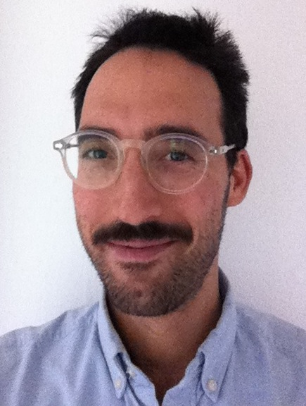
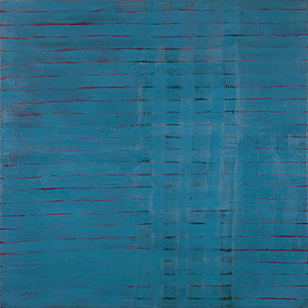

Mio Alter


Email: malter at math dot utexas dot edu
Office: RLM 10.104
I am a sixth-year graduate student in mathematics at UT-Austin. I am interested in topological K-theory and differential cohomology. My thesis is a construction of differential circle-equivariant K-theory. Under Conferences, Workshops, and Talks (below) are links related to differential cohomology and differential K-theory. My advisor is Dan Freed.
Activities of the Geometry Group at UT (i.e. where you might find me)
Weekly (mostly):
The Geometry seminar
The Student Geometry seminar
The Geometry and Strings seminar
The Graduate Geometry and Topology Current Literature seminar
More sporadic/special events:
The GADGET seminar.
Department colloquia. One highlight this semester has been Andrea Bertozzi on Geometric Methods in Image Processing, Networks, and Machine Learning.
Coming in March 2013: The Geometry/Topology RTG Graduate Workshop on Knots and Instanton Homology
The Statistics and Scientific Computation Seminar series.
Conferences, Workshops, and Talks (i.e. places I've been and spoken)
On March 8th, I talked about my research in the Graduate Geometry and Topology Current Literature Seminar. The talk was entitled Circle Equivariant Cohomology and K-theory and Differential Equivariant K-theory.
2013 Joint Meetings of the AMS and MMA in sunny San Diego. I gave a talk on my research.
FRG on Topological Field Theories (Notre Dame, June 2012). Includes videos. Background: Jacob Lurie's lecture series on Topological Field Theories here at UT.
Graduate Workshop on Supersymmetric Field Theories (Simons Center, March 2012). Includes videos, in particular, my talk on Abelian Duality in 2, 3, and 4 dimensions.
In Spring 2012 to prepare for the Supersymmetric Field Theories workshop at the Simons Center (above), we organized a SUSY Field Theories Graduate seminar here at UT. I gave a talk entitled Supermanifolds and the Super General Linear Group.
2012 Northwestern Masterclass in Gauge Theory (January 2012). Some background: What is a gauge theory? and Gauge theory is dead! Long live gauge theory!
In Fall 2011, we had a Computational Algebraic Topology seminar. I gave a talk entitled Minimization Problems as Eigenvector Problems.
We also had an Everything An Algebraic Topologist Should Know seminar that semester in which I gave a talk on Adams' paper J(X) IV about the J-homomorphism.
AMS MRC Computational and Applied Topology Workshop (Snowbird, Utah, June 2011) on applications of topology to data analysis and sensor networks. Links: Ayasdi, the topological data analysis company. What is Persistent Homology? and Sketches of a Platypus.
In the Spring and Summer 2011 to prepare for the Comp Top workshop at Snowbird (above), we organized a Computational Algebraic Topology Graduate seminar here at UT. I gave a talk entitled The Cech Complex, the Vietoris-Rips Complex, and Persistent Homology. It was based on Carlsson's paper Topology and Data.
In February 2011, I gave an introductory talk on Topological K-theory in the Student Geometry seminar.
Workshop on Differential Cohomology (Simons Center, January 2011). Includes videos.
In October 2010, I gave a talk on Differential Cohomology, also in the Student Geometry seminar.
Winter School on Higher Index Theory and Differential K-Theory (University of Goettingen, October 2010).
Workshop on Operator Algebras and Conformal Field Theory (University of Oregon, August 2010).
Talbot 2010: Twisted K-Theory and Loop Groups (Breckenridge, CO, May 2010). Included in the link are notes from my talk entitled Equivariant K-theory and its Twisted Versions.
2010 Graduate Student Geometry and Topology Conference (University of Michigan, April 2010). I gave a talk with the very long title Linear Flows of Line Bundles over a Riemann Surface Are Solutions to Lax Pair Equations.
In February 2010, I gave a talk entitled An Introduction to Khovanov Homology in the Student Geometry seminar. This was based on things I learned at the
Workshop on Homology Theories of Knots and Links (MSRI, January 2010). Includes videos.
In Spring 2008, I gave a few talks in the Geometry Literature seminar. One was on Milnor's famous paper on exotic 7-spheres: manifolds homeomorphic, but not diffeomorphic, to the standard 7-sphere. I also gave a talk on Donaldson's theorem.
Past Teaching
F12: TA for graduate Algebraic Topology with Cameron Gordon.
F11: Instructor for M 316L Foundations of Geometry, Statistics, and Probability.
F10: TA for Calculus M 408C with Dr. Ray Heitmann.
SP10: Grader for undergraduate Topology (with Dr. Alan Reid) and graduate Differential Topology (with Dr. Bob Gompf).
F09: TA (with Brandy Guntel) for Calculus M 408D with Dr. Bart Goddard.
SU09: Grader for Probability M 362K with Dr. Jeffrey Vaaler.
SP09: TA for Calculus M 408C with Dr. Alan Reid.
F08: TA for Calculus M 408D with Dr. Geir Helleloid.
back to the UT math page